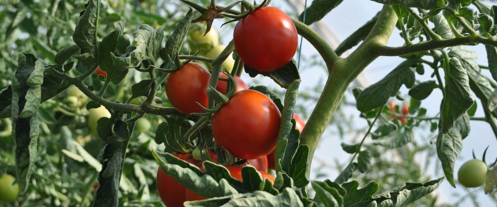
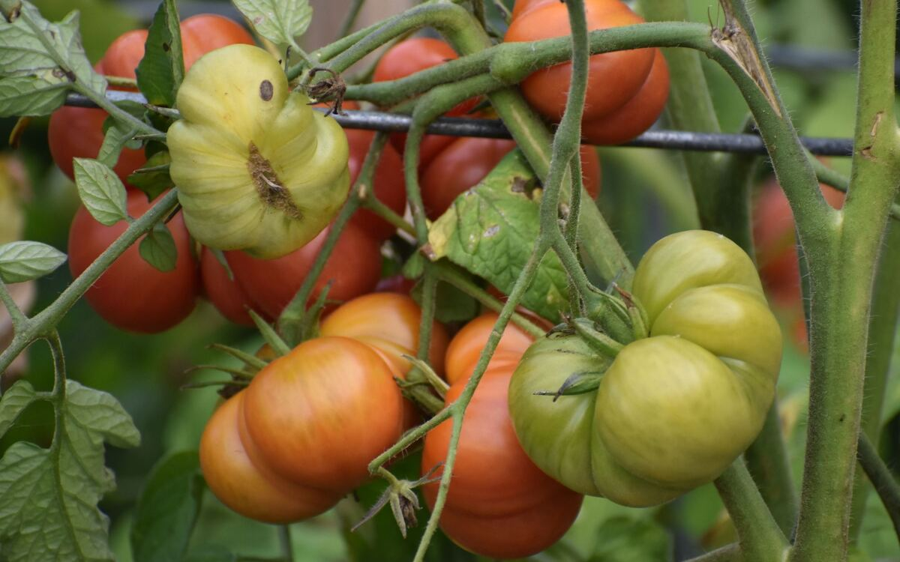

The Best Tomatoes for Cool Northwest Summers
Which tomato varieties actually ripen in Portland, Seattle and the coast, and how to give them the heat they need.
Every spring, Northwest garden centers fill up with tomato starts bred for places like California and the Midwest. Many of them will grow beautifully here and then hang green on the vine in September. The problem isn't frost. Portland's typical last spring frost is March 13 and Seattle's is March 2, giving both cities a long frost-free season. The problem is heat. Tomatoes need warm days and, just as important, warm nights to set and ripen fruit, and west of the Cascades summer nights often dip into the low 50s.
The fix is to choose varieties that finish fast and tolerate cool nights, then help them along.
Varieties that ripen reliably
- Stupice. A Czech heirloom with small, flavorful red fruit. It's one of the earliest tomatoes you can grow and keeps producing until fall.
- Early Girl. A dependable hybrid that ripens medium-sized fruit well ahead of most slicers.
- Sungold. An orange cherry tomato that's sweet, early and heavy-yielding. If you only grow one plant, many Northwest gardeners would pick this one.
- Oregon Spring. Bred in Oregon for exactly this climate. It sets fruit in cool weather and ripens early.
- Legend. Another Oregon-bred variety, with large fruit and some resistance to late blight.
In general, cherry and small salad tomatoes are the safest bets, and big beefsteaks are the riskiest. Look at the "days to maturity" on the tag: under 70 days is a good sign for west-side gardens, and under 60 is better on the coast, where Astoria's summers rarely get truly hot.

Give them every bit of heat you can
- Plant late, not early. Wait until the soil has warmed and nights stay mild. Tomatoes set out in cold April soil just sit and sulk. In Portland that usually means mid-May; see the exact window.
- Use the warmest spot. A south- or west-facing wall stores heat and gives it back at night.
- Warm the soil. Black or red plastic mulch laid a week before planting can raise soil temperature several degrees.
- Protect young plants. Wall-o-water rings or a simple plastic cloche keep nights warmer for the first few weeks.
- Don't overwater late in summer. Easing off water in August encourages plants to ripen what they have.
Beat late blight in a wet fall
When fall rains arrive, late blight can turn leaves and fruit brown almost overnight. Space plants for airflow, water at the base, and in September pinch off new flowers so the plant puts its energy into fruit that can still ripen. If rain sets in with green fruit on the vine, pick it: mature green tomatoes ripen fine on a kitchen counter.
Ready to plan? Find tomato planting dates for your city.